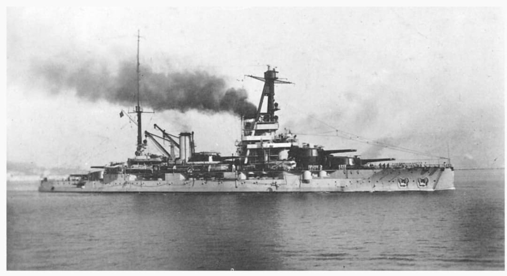
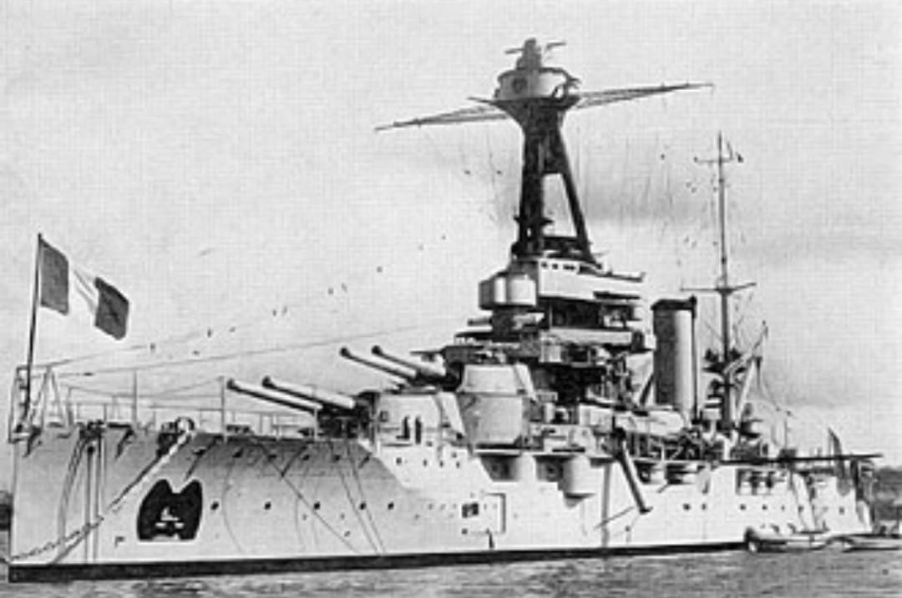
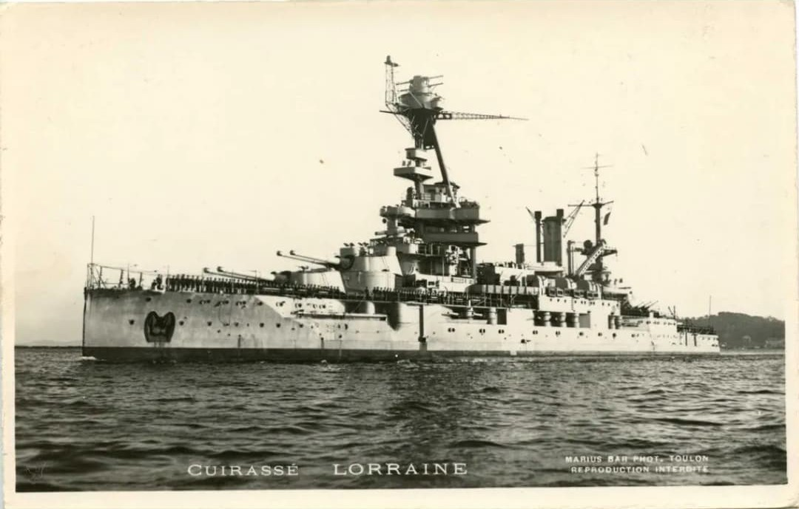
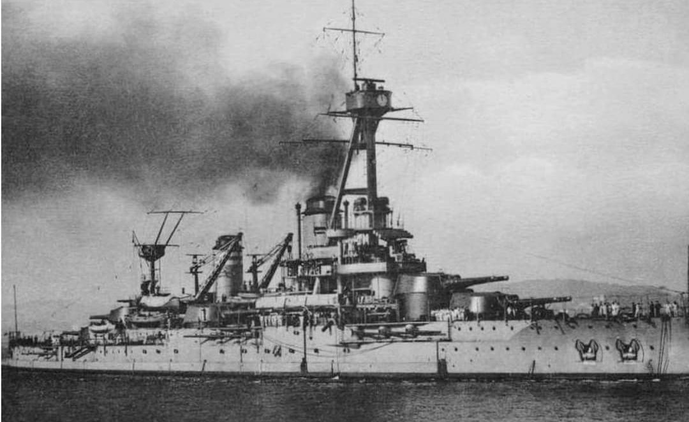
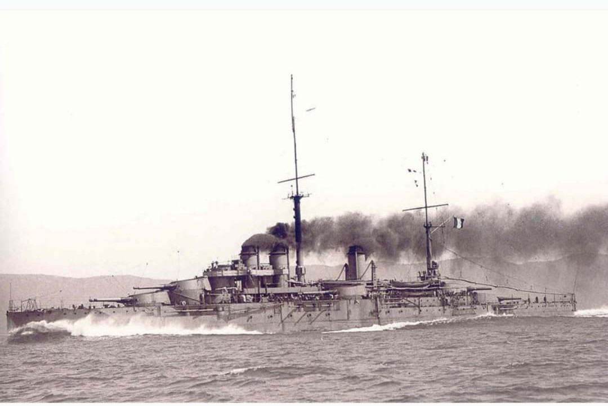

Cette fiche présente les cuirassés anciens de la Marine nationale encore en service en 1939. Conçus avant la Première Guerre mondiale, ils représentent une génération de navires dont la doctrine repose sur la ligne de bataille classique : artillerie lourde, blindage massif et vitesse limitée. Les informations ci‑dessous sont exposées dans un cadre strictement historique et documentaire, conformément aux exigences muséales de neutralité et de contextualisation.
Bien que dépassés en 1939 par les standards modernes, les cuirassés Bretagne, Provence, Lorraine, Courbet et Paris jouent un rôle essentiel durant la Seconde Guerre mondiale : défense côtière, engagements navals, soutien aux Forces françaises libres, et participation à des opérations majeures comme Mers‑el‑Kébir ou le débarquement de Normandie.

Classe : Bretagne
Service : 1915–1940
Rôle WW2 : présent à Mers-el-Kébir, détruit par l’explosion du magasin de munitions
Victimes : 977 marins

Classe : Bretagne
Service : 1916–1942
Rôle WW2 : bombardé à Mers-el-Kébir, échoué volontairement, sabordé à Toulon

Classe : Bretagne
Service : 1916–1953
Rôle WW2 : rejoint les Forces navales françaises libres, appui-feu en Méditerranée

Classe : Courbet
Service : 1913–1944
Rôle WW2 : batterie flottante en Angleterre, brise-lames pour le débarquement de Normandie

Classe : Courbet
Service : 1914–1944
Rôle WW2 : navire-école, batterie statique pour la défense côtière
Page du Musée HOP WW2 – Section navires français